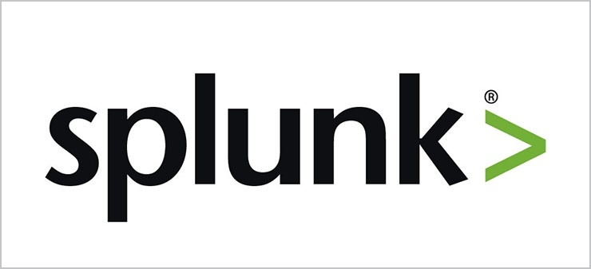
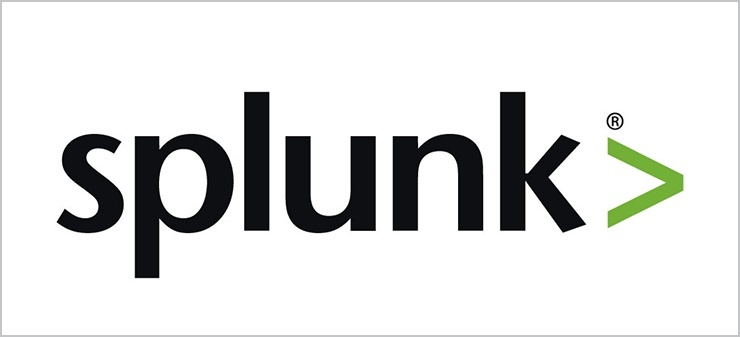

Learn Something
What are bugs?
Bugs are when any time the software fails
5 Types of Bugs
- Software doesn't do something the spec says it should
- Software does something the spec says it shouldn't
- Software does something the spec doesn't mention
- Software doesn't do something the spec doesn't mention, but should
- Software is difficult to understand, hard to use, slow, or - in the tester's eyes - will be viewed by the usernas just plain not right
What are the different types of testing?
Static black box - testing the spec
Dynamic black box - testing the program
Static white box - reading the code
Dynamic white box - running & inspecting the code


 
